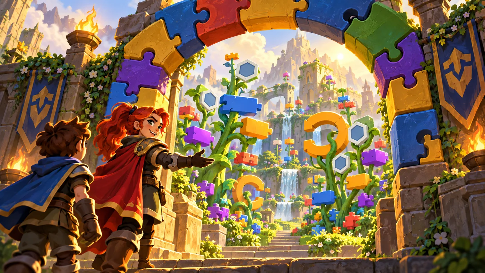
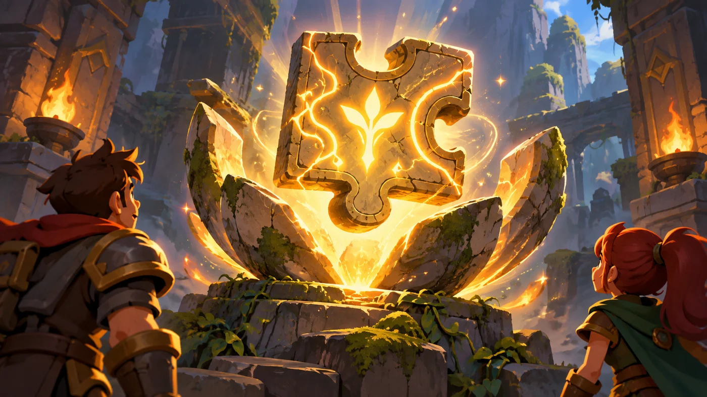

花园的第一块积木 走进图形化编程

转过弯，整座山谷铺在眼前：花是积木搭的，小径是积木搭的，连溪水都是积木一块块拼出来的。 入口立着一道彩色拱门，门楣上少了一块——安雅把它取下来，塞进你手里。
这里叫积木花园。她说：图形化编程的全部秘密，就在你手里这一块积木上。
这一单元我们先把工具摸熟：计算机是什么、编辑器分成哪几块、你的第一块积木该往哪儿扣。

0 单元导语与目标
0.1 学习目标
- 知道计算机由哪些部分构成，能分清硬件与软件；
- 会用鼠标和键盘完成基本操作，会保存、复制、粘贴、删除文件；
- 认识图形化编程平台的舞台区、角色区、模块区、脚本区、背景区五个区域；
- 看懂一块积木的形状、颜色与参数槽，知道积木为什么要"扣"起来；
- 能新建作品、拖出第一块积木、点绿旗让程序跑起来。
0.2 考纲对照
本单元对应《CCF 编程能力等级认证图形化编程认证标准》一级的第 1、2 两个知识块：
| 考纲知识块 | 考纲要求 | 本单元小节 |
|---|---|---|
| 1 计算机基础知识 | 认识计算机软硬件组成，了解计算机历史，理解程序与编程语言的概念，鼠标与键盘的基本使用 | 1.1、1.2、1.3 |
| 2 图形化编程平台 | 舞台区、角色区、模块区、脚本区、背景区；新建和保存作品；语言的选择；从本地打开软件 | 2.1～2.3、3.1～3.3、4.1 |
| 4 三大基本结构（预演） | 顺序结构、分支结构、循环结构 | 2.3、4.2 |
| 5 事件触发（预演） | 事件的基本概念，点击运行、当角色被点击、键盘被按下等 | 4.3 |
换句话说：这一单元不是"热身"，它就是考纲正文。一级单选题的前几道，几乎年年都从这里出。
1 计算机长什么样
1.1 五大部件
花园入口的机械师把一台老式"运算机"拆给你看。他说：别看它复杂，拆开来只有五样东西。
CPU 全名叫中央处理器，肚子里住着两位：运算器负责算，控制器负责指挥。 它俩配合，把一条条指令排好队执行下去。
1.2 硬件与软件
考纲里说的"了解计算机操作系统的使用"，指的就是系统软件这一层： 你能找到桌面、打开文件夹、启动图形化编辑器，就算过关。
1.3 鼠标、键盘与文件管理
| 你要做的事 | 怎么做 |
|---|---|
| 选中一个角色 | 鼠标单击它 |
| 把积木拖进脚本区 | 按住鼠标左键拖动，到地方松手 |
| 打开右键菜单 | 鼠标右键单击角色或积木 |
| 复制一份角色 | 右键角色 → 复制，或按 Ctrl + C / Ctrl + V |
| 保存作品 | 文件 → 保存到电脑，或按 Ctrl + S |
| 删除文件 | 选中文件按 Delete 键 |
| 撤销上一步 | Ctrl + Z |
2 图形化编程是什么
2.1 从写代码到拼积木
文本编程像是用笔写信：你得逐字写对，写错一个标点就寄不出去。 图形化编程像是拼拼图：每一块积木形状固定、颜色代表类别， 能扣在一起的一定是合法的，扣不上的根本扣不上——语法错误被"形状"拦住了。

2.2 舞台、角色与脚本
图形化编程里有三个词，一开始最容易搞混。安雅把它们写在花园的木牌上：
2.3 一块积木的解剖图
拿最常用的"移动"来说，把鼠标放到模块区的运动分类上，你会看到一叠蓝色的积木。 其中这一块，就是几乎所有作品的起点：
把一块积木拆开，能看到三样东西：
3 界面的五个区
3.1 舞台区与背景区
打开图形化编辑器，屏幕被分成五块。先把它们的名字和位置对上号。
3.2 角色区与模块区
角色区里每一张小卡片就是一个角色。选中哪个角色，脚本区显示的就是哪个角色的脚本—— 这一点考纲说得很直白："掌握程序对角色的灵活控制"。
模块区把积木按九种颜色分好组。一级必须认识的六组是：
| 积木分类 | 颜色 | 干什么用 |
|---|---|---|
| 运动 | 蓝 | 移动、转向、定位 |
| 外观 | 紫 | 说话、换造型、显示隐藏、变大变小 |
| 声音 | 粉 | 播放音效、背景音乐 |
| 事件 | 黄 | 什么时候开始做 |
| 控制 | 橙 | 等待、重复、如果……那么 |
| 侦测 | 浅蓝 | 碰到了什么、按下了什么 |
3.3 脚本区
脚本区是你的工作台。所有积木都是从这里拖进来的，也是在这里一块块扣起来的。
4 第一次动手
4.1 新建、保存与打开
在动手拼积木之前，先把保存这件事做掉——这是新手最容易吃亏的地方。
考纲要求你会"新建和保存作品"与"从本地打开软件"，指的就是这三步。 图形化编辑器一般在文件菜单里提供"保存到电脑"和"从电脑中上传"两项。
4.2 拖出第一块积木
第一步永远是先找到起点。在模块区的事件分类里，把这块黄色的积木拖到脚本区：
它的形状特别有意思：顶上是一道弧，底下是凹槽。这道弧说明它上面不能接东西—— 它只能是整段脚本的开头；底下那个凹槽说明下面可以接东西。
接着去运动分类拖一块移动积木，把它扣在下面：
4.3 点绿旗运行
积木拼好了，怎么让它动起来？舞台区左上角有两样东西：绿旗和红色停止按钮。
5 代码实战
这一关是少年版冒险的第一关。别看它只有三步，你会在里面第一次真切感受到： 是脚本在指挥角色。
宝石
进入关卡 →思路：先看一眼关卡实况：路很短。你要做的只有几件事——向右走、再向右走。 关卡里的一格就是一次"移动 1 步"，几格就是几块移动积木，按顺序往下扣。
注意这五块积木的排列顺序：帽子块在最上面，下面一块接一块。 如果把它们上下调换，角色走出来的路线就完全不同。
6 常见陷阱
正确做法：每段脚本的第一块，一定是从事件分类拖出来的黄色帽子块。
正确做法：拼积木之前，先在角色区点一下目标角色，确认它的边框高亮。
正确做法：养成"做完一段就先按
Ctrl + S"的习惯。
正确做法：看积木上的参数单位；要让角色走到某个确切的位置，用移到 x: y: 那块积木。
7 题目练习
第 1 题改编自 2026 年 9 月 · 图形化编程 一级 第 1 题，其余为原创练习题。
负责"看墙"的零件和负责"转弯"的零件，分别相当于计算机里的哪一类部件（ ）。
B.内存 / 硬盘
C.音箱 / 鼠标
D.显示器 / CPU
查看答案与详解
"转弯"是把结果做出来——轮子相当于输出设备（像手和脚）。
B 错：内存和硬盘都是存储设备，不负责感知；
C 错：音箱是输出设备、鼠标是输入设备，顺序和角色都不对；
D 错：显示器是输出设备，而 CPU 是"思考和指挥"的处理器。
判断口诀：信息"进来"的是输入，"出去"的是输出，"装东西"的是存储。
对应小节1.1 五大部件。
B.角色区
C.脚本区
D.模块区
查看答案与详解
A 错：舞台区是看效果的地方，积木放不进去；
B 错：角色区只列角色，不接收积木；
D 错：模块区是积木的仓库，是从这里拿出来，不是放进去。
对应小节3.1～3.3 五个区域的分工。
B.背景和角色完全一样，没有区别
C.一个作品可以有多个角色，每个角色都有自己的脚本
D.角色只能动，不能说话
查看答案与详解
A 错：一个作品可以有任意多个角色；
B 错：背景铺满整个舞台、铺在最后一层，角色站在它前面，而且背景也有自己的脚本；
D 错："说……"积木就在外观分类里，角色当然能说话。
对应小节2.2 舞台、角色与脚本。
B.插进"如果……那么"的六边形凹槽里
C.放进"重复执行 10 次"后面的白色圆框里
D.单独放在脚本区里就能执行
查看答案与详解
A 错：六边形块下面没有凹槽，接不上下一块积木；
C 错：那个白色圆框要填数字（椭圆形），放不进六边形；
D 错：单独放着的积木不会被执行，必须扣进脚本里。
对应小节2.3 一块积木的解剖图。
B.鼠标
C.显示器
D.摄像头
查看答案与详解
C 错：显示器是把结果送出去的输出设备。
小技巧：问一句"这个设备是往计算机里送东西，还是往外显示东西"——送进去的是输入，显示出来的是输出。
对应小节1.1 五大部件。
查看答案与详解
单独飘在脚本区里、没有接到事件块上的积木，点绿旗也不会动——因为没有任何事件叫醒它。
对应小节4.2、4.3 帽子块与绿旗。
查看参考答案与要点
要点：
① 整段脚本必须以当绿旗被点击开头，否则点绿旗不会有反应；
② 三块积木从上到下依次扣好，顺序就是执行顺序；
③ "说……2 秒"里的 2 要填在白色圆框里，它决定这句话停多久。
对应小节4.2 拖出第一块积木。
8 本单元小结

你在花园门口学到了什么
- 计算机的五大部件——输入、CPU、存储器、输出，以及看不见的软件；
- 五个区域——模块区找积木、脚本区拼积木、舞台区看效果、角色区换主角、背景区换布景；
- 一块积木的三段式——颜色说属于哪一类、形状说能扣在哪、参数槽说填多少；
- 帽子块——每段脚本的起点，也是"事件"这个概念在图形化里的样子。
下一站：换装小屋
认识了工具，接下来该认识演员了。舞台上的角色从哪儿来？它能换几套衣服？ 背景和角色到底差在哪里？下一单元我们把换装小屋翻个底朝天。